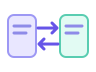
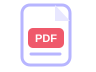

Text to PDF
Convert text into a downloadable PDF document.
Open tool →Convert, scan, organize and create documents with simple browser-based tools.
Free to use — no sign-up required.
Explore tools →
Choose a tool to open its dedicated page.

Convert text into a downloadable PDF document.
Open tool →
Turn text into a shareable PNG image.
Open tool →Scan pages with your camera, enhance images and save a multi-page PDF.
Open tool →Extract text from images with optical character recognition.
Open tool →Resize images and export as JPG, PNG or WebP.
Open tool →Convert an image into a PDF document.
Open tool →Extract selectable text from PDF documents.
Open tool →Combine multiple PDF files into one.
Open tool →Extract a page range from a PDF.
Open tool →Rotate pages in a PDF file.
Open tool →Convert a PDF page to a JPG image.
Open tool →Convert DOCX document text to PDF.
Open tool →Create an editable Word document from text.
Open tool →Create a simple professional resume PDF.
Open tool →Draft and download a tailored cover letter PDF.
Open tool →Practical walkthroughs to help you work with documents.
Learn how to combine multiple PDF files into one document.
Read guide →Extract a page range from a PDF without changing the original file.
Read guide →Use OCR to copy text from photos and screenshots.
Read guide →Understand text-based PDFs, scanned PDFs and OCR.
Read guide →Turn a JPG or PNG image into a PDF document.
Read guide →Choose dimensions and export an image for web or sharing.
Read guide →Many tools process files in your browser. OCR quality, file layout conversion and browser compatibility can vary. Always review generated documents before using them.